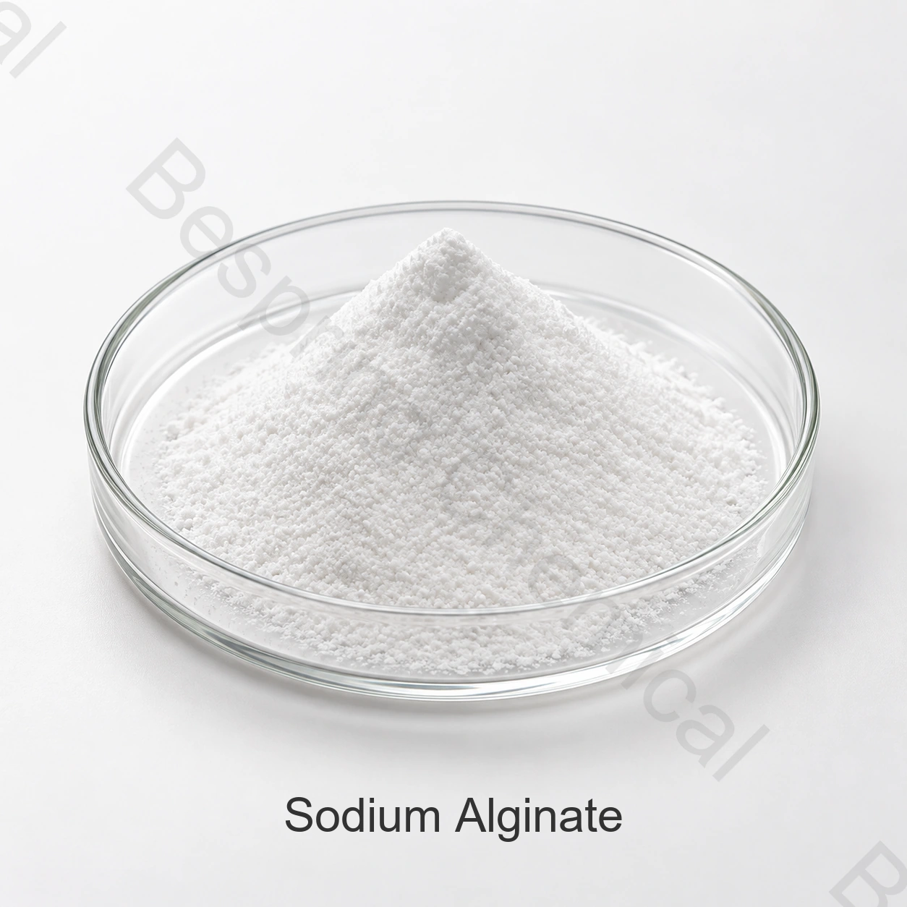

Реструктурированные и формованные продукты
Используйте испытания гелеобразования с контролем кальция для создания формы и структуры.
Пищевой ингредиент · Водорастворимый гидроколлоид · INS 401
Альгинат натрия пищевого качества — гидроколлоид для загущения, стабилизации и гелеобразования. Для выбора марки нужны вязкость с методом измерения, размер частиц, прочность геля и условия пищевого процесса.
Укажите предполагаемой пищей, целевыми лимитами, методами испытаний, количеством и назначением.

Кратко о продукте
Альгинат натрия пищевого качества представляет собой водорастворимый альгинатный гидроколлоид, идентифицированный FAO/JECFA как INS 401 и CAS 9005-38-3. Выбор марки зависит от вязкости, размера частиц и прочности геля.
Коммерческая пригодность зависит от точного класса, источника, метода испытания, применения и требований целевого рынка. Текущая согласованная спецификация и COA на партию определяют условия приёмки партии.
Области применения
Применение выбирают по пищевой категории, рецептуре, процессу и требованиям рынка.
Используйте испытания гелеобразования с контролем кальция для создания формы и структуры.
Оцените управление водой, переносимость процесса и текстуру после приготовления пищи или нагревания.
Выберите вязкость и чистоту для суспендирования, текстуры и стабилизации.
Оцените связывание и формование в полной рецептуре. Кормовые применения требуют отдельной оценки класса сырья и требований к кормам.
Коммерческие справочные показатели
Приведены коммерческие справочные показатели. Критерии приёмки определяют согласованная спецификация, методы испытаний и COA конкретной партии.
| Показатель | Спецификация |
|---|---|
| Внешний вид | Белый порошок |
| Вязкость | 50-1200 мПа·с или требования клиентов |
| Размер частиц (mesh) | 40-200 меш или требования клиента |
| Прочность геля | 500-1000 г/см2 или требования клиента |
| pH | 6–8 |
| Потери при высушивании, 105°C/4 ч | ≤15.0% |
| Зола | 18.0–27.0% |
| Тяжёлые металлы (в пересчёте на Pb) | ≤20 ppm |
| Свинец (Pb) | ≤5 ppm |
| Мышьяк (As) | ≤3 ppm |
| Общее количество бактерий | ≤ 1000 CFU/г |
| Плесень и дрожжи | ≤ 100 CFU/г |
| E. coli | Не обнаружено в 25 г |
| Сальмонелла | Не обнаружено в 25 г |
Спецификация и идентификацию продукта: Альгинат натрия — полимер; JECFA указывает повторяющееся звено (C6H7NaO6)n. Обозначение C6H9O7Na не следует использовать как единую молекулярную формулу полимера. Для сравнения вязкости согласуйте концентрацию, температуру, прибор и режим измерения; для прочности геля — метод и условия формирования геля.
Документы для закупки
Запросить текущую согласованную спецификацию или TDS, SDS, методы испытаний и типовой или COA на партию.
Проверяйте документы Kosher, Halal и ISO для точной оценки, источника и производственной площадки.
Обзор Спецификация ФАО/JECFA натрия альгинат и применять требования целевого рынка отдельно.
Хранение и обращение
Вопросы покупателя
Альгинат натрия оценивают в формованных продуктах, макаронных изделиях, начинках, напитках, джемах и мясных системах. Отдельные кормовые применения требуют оценки кормового класса и соответствующих правил. Юридическое использование, дозировка и результаты применения должны быть подтверждены для конкретного готового продукта и целевого рынка.
Справочная упаковка — мешок 25 кг; материал и специальные требования согласуют при заказе. Справочное минимальное количество заказа составляет 500 кг.
Запросить текущую согласованную спецификацию или TDS, SDS, типовой COA или COA партии, методы испытаний и применимые сертификаты качества пищевых продуктов для точной производственной площадки и сорта.
Укажите пищевое применение, целевую спецификацию, методы испытаний, количество, упаковку, место назначения, предпочтение паллет и требуемую дату доставки.
Связанные ингредиенты
Сравните идентичность, спецификацию и пищевые применения.
Сравните идентичность, спецификацию и пищевые применения.
Сравните идентичность, спецификацию и пищевые применения.
Поставка по согласованной спецификации
Совместное применение, целевой класс и спецификация, количество, упаковка, место назначения и необходимые документы.